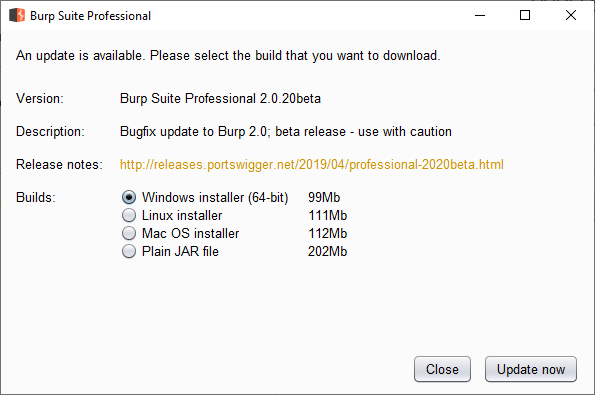
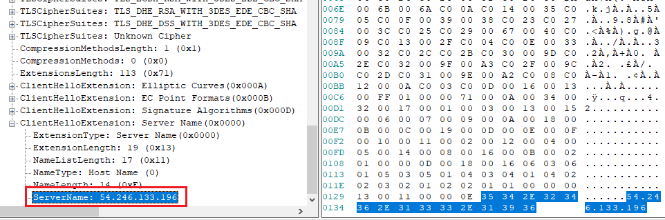

I tried to disable Burp's update nag screen and failed. This blog post describes the analysis and my effort to date.
Hacky Workaround: Block outgoing requests to 54.246.133.196 but this will
also, block installing extensions from the Burp app store.
Part two (if there is one) will discuss more things that I tried and did not work and/or what worked and how you can disable it.
Disclaimer: This is not a Burp pro crack/hack.
Problem
If you still use Burp 1 (which I do at the time of writing in April 2019) you have seen this annoying update screen every time you start Burp.
 Mindlessly press CloseGod knows how much time has been wasted clicking Close collectively. Burp 1 is
under a feature freeze so the option will not be added.
I want to disable this screen. Should be easy enough right?
Analysis
This section talks about my analysis
Installation Options
When installing Burp on a Windows machine, you can either install a standalone
jar file or an executable using install4j.
It does not really make a difference in our analysis. The executable most likely
(I don't know this for sure but I can make an educated guess) just runs the jar
file with the command-line arguments in BurpSuitePro.vmoptions.
Hypothetical Update Process
We can assume the update process is as follows:
- The application detects the local version (or has it hardcoded).
- The application checks the latest version against an online resource.
- Most likely a web service.
- If the current version is older than the latest version, we get the pop-up.
Setup
Next, we need to observe the application to figure out if our hypothesis is correct and/or how it's done.
To do so, I dropped Burp pro into one of my analysis Win 10 VM from modern.ie and looked at the process.
Network Activity
I used Microsoft Network Monitor (Netmon)1. Run Burp and stop the capture after the update dialog is displayed. We do not need anything after that.
After filtering by process (which is why I used Netmon) and tls, I saw the
following:
In Wireshark, we cannot filter by process but if we are only looking for TLS
connections (and it's a fair assumption that update check is not over HTTP),
we can use this filter to display only ClientHello packets:
ssl.handshake.type == 1
Inside the ClientHello we can see the Server Name Indication (SNI) field. To
learn more about it please read the first section of this Cloudflare blog:
The SNI is very useful for proxying. I have been planning to write a blog post about it for quite a few years now.
The SNI field for these requests has an IP address instead of a server name. This means Burp is contacting these IPs by a static IP address and not by a hostname. This makes our life much harder because it's not doing a DNS lookup.
 SNI field containing an IP addressRedirecting by Outgoing IP on Windows
If the endpoint is contacted by server name and Burp does a DNS lookup, we can
sinkhole/redirect the endpoint using an entry in the hosts file2. We cannot do
it here which means we have to redirect by IP which is not possible as easily
on Windows without something like iptables. Related post:
I am not going to talk about redirecting by IP address in this blog. Instead I am going to discuss what other ways I tried.
What is 54.246.133.196?
This appears to be a static IP assigned to portswigger's infra hosted at
AWS-eu-west-1 or ec2-54-246-133-196.eu-west-1.compute.amazonaws.com.
If you directly go to this IP in your browser, you are redirected to
https://portswigger.net/.
Note: While procmon might show Burp is connecting to the ec2 URL above,
redirecting it to localhost using the hosts file does nothing. It's just
procmon resolving the network address. Press ctrl+N to toggle this behavior.
Preliminary Solution 1
Blocking this IP will fix the problem. However, it will block access to the
portswigger website and you cannot install extensions from inside Burp anymore.
What's Inside the Request
To proxy the request we have two main options:
- Redirect the traffic.
- Hook the function.
Proxying Burp with Burp
To redirect the traffic, we could try modifying proxy settings or do manual redirection.
The plan is to run one instance of Burp and listen on 127.0.0.1:8080 and run
a second instance of Burp to proxy the update requests.
This is not about using Burp in proxy chains. If you want to set that up, please see Thick Client Proxying - Part 4: Burp in Proxy Chains.
Jar Proxy Settings
Chances are Burp is not going to honor the system and JRE proxy settings but it's worth a try.
If using the executable, add the following lines to BurpSuitePro.vmoptions:
-Dhttp.proxyHost=127.0.0.1
-Dhttp.proxyPort=8080
-Dhttps.proxyHost=127.0.0.1
-Dhttps.proxyPort=8080This is supposed to tell the jar file to use 127.0.0.1:8080 as a proxy. If
running the jar file manually, pass these as command-line options.
Running the executable/jar file shows that this has no effect. Burp does not care about proxy settings when sending those requests.
On a similar note, using an upstream proxy is also useless. These requests do not care about the project's upstream proxy.
JVM Proxy Settings
Another option is to modify net.properties. Note that if you installed
Burp, it is using its own bundled JRE. On Windows, we have to modify the file
inside:
C:\Program Files\BurpSuitePro\jre\lib
If you are running the jar file manually, modify the file in your system's JRE/JDK.
We can set similar options (-Dhttp.) in that file and try again. The result is
the same and Burp does not care.
java.net.useSystemProxies
Another option is to use java.net.useSystemProxies. Setting it to true means
Java will look up the WinINET proxy settings (also called IE proxy settings)
and use them. Use this shortcut control inetcpl.cpl,,4.
This results in a very odd behavior on Burp's side. Burp tries to use the 8080
endpoint as a socks proxy. After establishing a TCP connection, it sends the
following payload:
05 02 00 02.
Seems like Burp just ignored HTTP proxies and goes directly for socks. Perhaps for usage in an enterprise environment. This is not some other service, I checked with procmon to see ports opened to send the request.
SOCKS errorsPreliminary Solution 2
Obviously, Burp cannot connect anywhere and the update screen goes away. But
we are also setting up a system-wide proxy setting and wrecking the machine.
Hooking
It's possible to hook Java methods and they are somewhat more straightforward than hooking native methods.
I tried a few hooking methods and had some success:
Javasnoop
Javasnoop is fairly old but I had used it in the past to hook Java apps with success. In our case, it did not work because you cannot create hooks before executing the Burp jar. Meaning by the time I could setup hooks, the update had already happened.
This can be useful later because Burp has a Check for Updates button inside
which can be used to redo the whole thing. It's the same method as the one
used at startup.
Jackplay
Jackplay is a profiling tool with a web interface. It can be used to trace Java methods, look at their parameters and modify their contents. I played with it a bit and it seemed to work somewhat. It's definitely something I am going to use in the future.
Decompiling
To hook, we need to figure out what is sending out the requests. Most classes in Burp's jar are obfuscated3. I tried a few decompilers on it.
CFR got stuck on some parts inside classes. For example, burp.StartBurp
which contains main.
Procyon mostly worked but got stuck on some large class files. I tried to decompile all files in the jar with:
java -jar procyon.jar -jar burp.jar -o decompiled-procyon
The workaround is to extract the jar file into a directory like burp and then
run the following command:
java -jar procyon.jar -jar burp\*.class -o decompiled-procyon
If Procyon gets stuck on a large file, stop the decompilation, remove the file, remove the previous classes that were decompiled, and execute the command again. Or just go and rename the extension of some large class files before running the decompiler.
These class files gave me problems:
cajd5dl0cqhffp- and more.
What's Next?
I am going to stop for now. Future plans include but are not limited to:
- Setup Burp in a *nix VM and redirect traffic to another Burp instance in another VM with iptables.
- Look inside decompile code to figure out what methods are used to make the requests. It's probably going to be some standard Java method. Then hook those methods and look at the requests/responses.
- Try something like EchoMirage. Use it in a VM and then nuke the VM.
- Try hooking with Frida or WinAppDbg. It might not be needed if we can hook with Java-specific tools mentioned above.
- After installing Netmon for the first time and before a logoff/restart, you need to run it as admin. Otherwise, it can not see any network interfaces. [return]
- This adds an entry to the local Windows DNS cache. View it with
ipconfig /displaydnsorGet-DnsClientCache. [return] - I do not know enough about Java obfuscators to figure out what's used. [return]